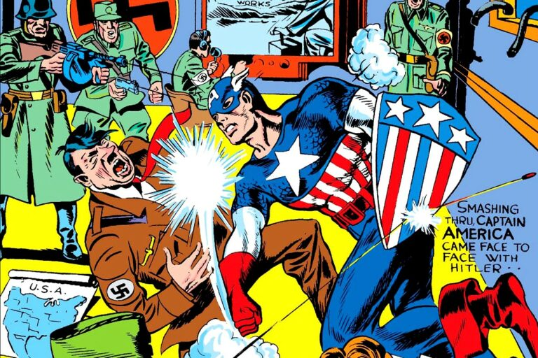

A Marvel ganhou bastante dinheiro no início dos anos 90 devido ao boom das histórias em quadrinhos (desenhos) nos Estados Unidos, mas no meio da década enfrentou graves problemas financeiros, com acusações de que Perelman havia tirado todo o dinheiro da empresa em proveito próprio. Como consequência, a Marvel anunciou que o seu distribuidor exclusivo passaria a ser o Heroes World, que fez com que toda a indústria de distribuição de revistas de histórias em quadrinhos sofresse um grande abalo. A perda potencial da maior empresa da indústria, originou o encerramento das atividades da maioria dos distribuidores. No momento, existe apenas uma grande distribuidora de histórias em quadrinhos nos Estados Unidos: a Diamond Distribution. Muitos peritos julgam que esse fato causou um imenso dano à indústria das histórias em quadrinhos mundial. No auge da crise, o investidor Carl Icahn tentou obter o controle da Marvel, mas após arrastadas batalhas jurídicas, o controle da empresa foi entregue em 1997 à Isaac Perlmutter, proprietário da Toy Biz, uma das empresas do grupo. Com o seu sócio Avi Arad e os seus nomeados (e controversos) editor Bill Jemas e diretor Joe Quesada, Perlmutter reergueu a Marvel. Além da revitalização das revistas da empresa, alguns dos seus personagens foram licenciados para se tornarem filmes de sucesso, principalmente X-Men, X-Men Origins: Wolverine, Homem-Aranha, Quarteto Fantástico, Hulk, Homem de Ferro, Thor, Justiceiro, Demolidor e Blade.
